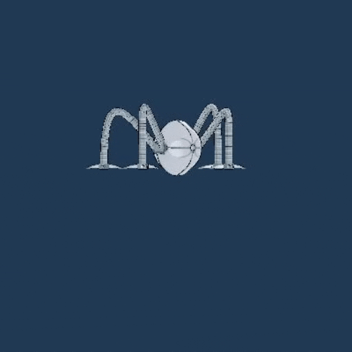
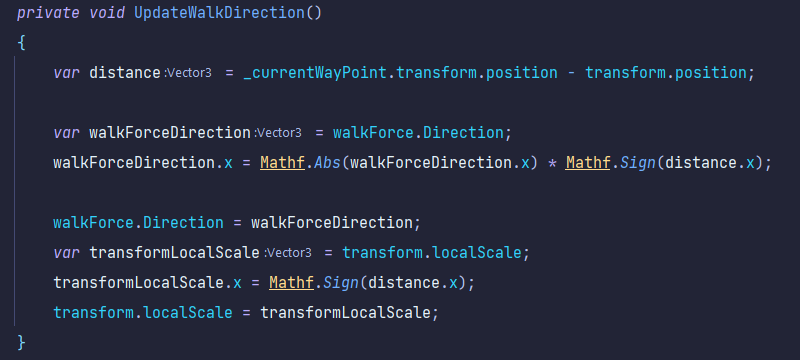
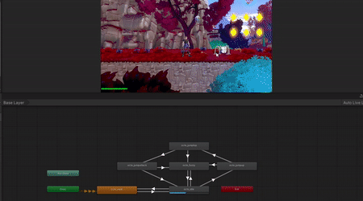
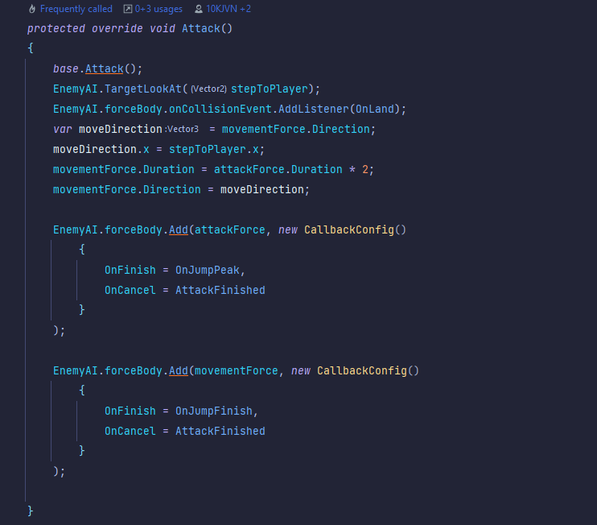
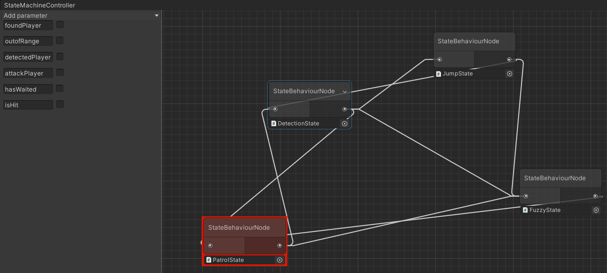

Project Starfall
Project Status:
Project Type:
Project Duration:
Software Used:
Languages Used:
Primary Role(s):
Ongoing
Professional
2020 - Now
Unity
C#
Game Developer
About Project Starfall
Our Unannounced Game as a Service is a 2D Metroidvania experience for local co-op play, inspired by beloved 1980s cartoons. It operates as a constantly evolving game, offering an expanding open world, engaging storylines, and character customization. Join up to 4 players as you embark on cooperative adventures and exciting missions, uncovering the mysteries of the game's world while customizing your characters with 1980s nostalgia.
My Features
- Octodrone
- Radial Stamina
- Post-processing
Technologies Used
- Statemachine
- Shadergraph
- Animator
Intro
The Octo Monster feature meant a lot to us, it was our first shot at creating a ground-based enemy in the game. Figuring out how to make a monster that attacks was tough, so we started by looking into AI systems. It was tricky because of this thing called the ForceSystem (FS), but we kept at it and finally understood how it worked. My colleague Jason Siegersma and I worked well together, with a clear plan outlining our roles. I was in charge of the animations & unity events, while Jason mainly focused on the code. What was cool is that we switched roles every 1-2 hours, keeping things balanced. Oh, and we worked in sprints of 2 weeks, which helped us stay focused and make progress quickly.
Each of octo's animations:

In the gif above you can see Octo's Idle, Walking, Jumping, Attacking & Fuzzy animations!
The visuals as well as the animations of this entity are made by Alex Kentie.
Development
The Octo Monster operates on 4 unique states that make it function.
We began by setting up a new Pathfinding script dedicated to ground units.
Which did not go without the neccesairy struggle to make it a generic.
Moving on to the Detection state wasn't too difficult.
However, things got complicated once we delved into the Fuzzy and Attack States.
We had to call in our Lead Developer, Berend, for assistance.
It turned out that triggering the AttackState caused the DetectionState to be triggered at the same time causing several animation glitches.
A function from our patrolling script:

In the snippet above you can the walkForce direction being inversed by math functions.
Simply said, if the direction of your walkForce is negative, update walkForce to positive.
Or from positive to negative of course depending on the X-axis' position.
Octo patrolling in game:

As seen above octo's orientation flips appropriately thanks to the UpdateWalkDirection function.
The Attacking and Fuzzy States played a vital role in bringing the Octo Monster to life. The Attacking state was all about making the creature come alive during battles, while Fuzzy injected an element of unpredictability into its actions. The Octo Monster owed its lifelike feel to the animator's prowess. Their keen eye for detail and innate understanding of the game's soul gave the Octo a persona that players could connect with. The result was an immersive experience, with every movement pulsating with the game's essence, making the Octo an integral part of the gameplay.
Octo Attacking:

The animator's transitions get highlighted whenever they get triggered.
The incredible visual appeal of the Octo Monster was the handiwork of Alex Kentie, who utilized VFX shaders to highlight its legs. These legs not only bent on their own but were also easy to customize, lending a touch of visual elegance to the Octo.
Conclusion
In the end, after me and my colleague worked about 8 ~ 12 weeks on this feature, i can confidently say we've learned a LOT. For example, to sum up a few notable things i've learned during this process which i'll be able to continue using in my career is:
All the bugs and technical issues i've faced in this process were sometimes agonizing but when finally resolved. It feels greater than anything i can think off! I also learned how to work better in a team, for example whenever one of my colleague's were done with their feature and had free time on their hands. You could always ask them or anyone else on the team for help when needed. The same goes for the daily standups and stand downs we held, always great to hear people's feedback on whatever you're creating. If i had to name the thing im proudest of achieving during the development of this feature is: the JumpState
JumpState: Octo's Unique attack state

This script inherits from the base AttackState.
But, there's a tiwst to this attack, that goes like this:
1. Octo Disables gravity and recceives enough force to jump, because it's being multiplied by two.
2. Then in mid-air an event is triggered that enables gravity, adding a force forward targeting the current player position.
And there you have the attack explained, octo efficiently switches between his states to perform these actions in sync with the animator and it's own states!
The most challenging aspect's of this feature to me were figuring out the ForceSystem & the Statemachine system. Which i have a much greater understanding off now thanks to extensive research, trial and error and not giving up. Thanks for reading
Octo's Statemachine:

Each of Octo's 4 states with their connections.
Their Official website: neonorigins.com